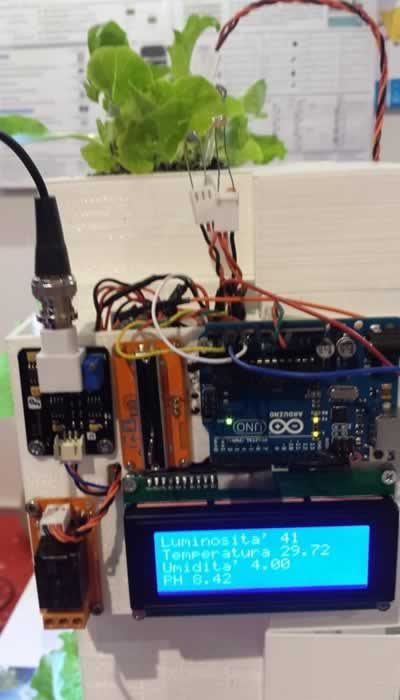

My Project Proposal
The Project:
Modular Home Hydroponic system is a new kind of user friendly scalable hydroponic systems. It allows people to grow plants in intelligent pots that have nice and modular design, and which health is continuously monitored in order to grow in optimal conditions.
The problem or inspiration:
In the past years, I have observed my wife dealing with many difficulties related to growing plants
inside our house. Part of the problems were related to frequency and quantity of watering, single pots placed over various home objects which made the house somehow looking bad, and the problem of taking care of plants when we were away for holidays, etc.
While reflecting about the problem I started questioning: Why can’t we have intelligent pots that monitor and tell us the necessary information about each specific Pot/plant? Why can’t we have nice modular pots that each user can compose and place in his house
according to his preferences and requirements? Why can’t we have a pot that waters automatically the plants?
Possible solutions:
In order to face the modular feature of the pots, my idea is to develop objects based on the concept
illustrated in the following picture:
In order to monitor and take care of the plants’ health, my idea is to develop a system-based sensors and electronic board that measures, stores and processes all the plant data. The following picture of a similar system developed by the Mediterranean Fab Lab
illustrates somehow my idea:

In order to develop a hydroponic system that automatically waters plants, and which makes other pots easily connected to each other and to the central monitoring system, my rough idea is as follow: